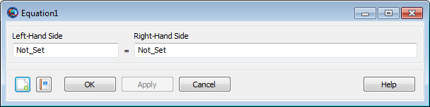

=)Assignment (=) — Set a variable or resource field to a value, possibly using
mathematical expressions
settable_item = expressionThe assignment command (in the GUI, the Equation command) allows you to set a resource field or parameter to a value, possibly using mathematical expressions. GMAT uses the assignment operator ('=') to indicate an assignment command. The assignment operator uses the following syntax, where LHS denotes the left-hand side of the operator, and RHS denotes the right-hand side of the operator:
LHS = RHSIn this expression, the left-hand side
(LHSRHSLHSRHS
The left-hand side of the assignment command must be a single item of any of the following types:
allowed resource (e.g. Spacecraft, Variable, Array)
resource field for allowed resources (e.g. Spacecraft.Epoch, Spacecraft.DateFormat)
settable resource parameter (e.g. Spacecraft.X, ReportFile.Precision)
Array or Array element
See the documentation for a particular resource to determine which fields and parameters can be set.
The right-hand side of the assignment command can consist of any of the following:
literal value
resource (e.g. Spacecraft, Variable, Array)
resource field (e.g. Spacecraft.Epoch, Spacecraft.DateFormat)
resource parameter (e.g. Spacecraft.X, ChemicalThruster.K1)
Array or Array element
mathematical expression (see below)
MATLAB function calls are considered distinct from the assignment command. See the reference pages for more information.
|  |
The assignment command in the script language corresponds to the
Equation command in the GUI. The
Equation properties box allows you to input both
sides of the expression into free-form text boxes. The default values on
each side are “Not_Set”; these are placeholders only,
and are not valid during the mission run. You can type into each box the
same syntax described above for the script language. When you click
OK or Apply, GMAT validates each
side of the expression and provides feedback for any warnings or
errors.
In general, the data types of the left-hand side and the right-hand side must match after all expressions are evaluated. This means that a Spacecraft resource can only be set to another Spacecraft resource, numeric parameters can only be set to numeric values, and String resources can only be set to string values. Additionally, the dimension of Array instances must match for the command to succeed. For numeric quantities, the assignment command does not distinguish between integers and floating-point values.
Parameters can be used on either side of an assignment command, but there may be certain restrictions.
On the right-hand side of the command, any parameter can be used.
If a parameter accepts a dependency (such as
Spacecraft.CoordinateSystem.X)
and the dependency is omitted, a default dependency value will be used.
For coordinate-system-dependent parameters, the default is
EarthMJ2000Eq. For central-body-dependent
parameters, the default is Earth.
On the left-hand side, only settable (writable) parameters can be used. Furthermore, no dependency can be specified, except in the special case that the dependencies on both sides of the assignment command are equivalent. On the left-hand side, the default values of omitted dependencies are automatically taken to be the current values of the CoordinateSystem field of the referenced Spacecraft and its origin.
These examples show valid and invalid usage of parameters:
Create Spacecraft aSat1 aSat2
aSat2.CoordinateSystem = 'EarthFixed'
Create Variable x
BeginMissionSequence
x = aSat1.EarthFixed.X % Valid: Parameter with dependency on RHS
x = aSat1.EarthMJ2000Eq.X % Valid: This and next statement are equiv.
x = aSat1.X % Valid: Default dep. value is EarthMJ2000Eq.
x = aSat1.Mars.Altitude % Valid: Parameter with dependency on RHS
x = aSat1.Earth.Altitude % Valid: This and next statement are equiv.
x = aSat1.Altitude % Valid: Default dependency value is Earth.
aSat2.X = 1e5 % Valid: Default parameter value is EarthFixed.
aSat2.EarthMJ2000Eq.X = 1e5 % INVALID: Dependencies not allowed on LHS.
aSat2.EarthFixed.X = 1e5 % Valid: Special case because value = default.
aSat2.EarthMJ2000Eq.X = aSat1.EarthFixed.X % INVALID: Dependency on LHS
aSat2.EarthMJ2000Eq.X = aSat1.EarthMJ2000Eq.X % INVALID: Dependency on LHS
aSat2.EarthFixed.X = aSat1.EarthFixed.X % Valid: Special case
% DANGEROUS! Valid, but sets EarthMJ2000Eq RHS values to EarthFixed LHS param.
aSat2.X = aSat1.EarthMJ2000Eq.X
% DANGEROUS! RHS default is EarthMJ2000Eq, LHS default is current setting on
% aSat2 (EarthFixed in this case).
aSat2.X = aSat1.X The assignment command supports the use of inline mathematical expressions on the right-hand side of the command. These expressions follow the general syntax rules of MATLAB expressions, and can use a variety of operators and built-in functions.
Mathematical expressions are recognized by the presence of any of the operators or built-in functions described below. Before execution, all white space (e.g. spaces and tabs) is removed from the expression.
Mathematical expressions operate on numeric values (integers or floating-point numbers). This includes the following:
literal values
numeric resources (Variable, Array)
gettable resource parameters (e.g. Spacecraft.X, ChemicalThruster.K1)
Array elements
calculation parameters (e.g. Spacecraft.OrbitPeriod)
nested mathematical expressions
Several of GMAT’s operators and functions are vectorized, so they operate on full Array resources as well as scalar numeric values.
| Vectorized operators |
| ||||||||
| Scalar operators |
|
When multiple expressions are combined, GMAT uses the following order of operations. Operations begin with those operators at the top of the list and and continue downwards. Within each level, operations proceed left-to-right.
parentheses ()
transpose ('), power
(^)
unary plus (+), unary minus
(-)
multiplication (*), division
(/)
addition (+), subtraction
(-)
GMAT supports the following built-in functions in mathematical expressions. Supported functions include common scalar functions, meaning they accept a single value only, such as sin and cos, matrix functions that operate on an entire matrix or vector, and string functions.
| Scalar Math Functions |
|
| Numeric Manipulation Functions |
|
| Random Number Functions |
|
| Matrix Functions |
|
| String Manipulation Functions |
|
| Specifiers |
|
| Flags |
| ||||||||||
| Width |
| ||||||||||
| Precision |
|
Evaluate a basic algebraic equation:
Create Variable A B C x y
x = 1
Create ReportFile aReport
BeginMissionSequence
A = 10
B = 20
C = 2
y = A*x^2 + B*x + C
Report aReport yMatrix manipulation:
Create Array A[2,2] B[2,2] C[2,2] x[2,1] y[2,1]
Create ReportFile aReport
A(1,1) = 10
A(2,1) = 5
A(1,2) = .10
A(2,2) = 1
x(1,1) = 2
x(2,1) = 3
BeginMissionSequence
B = inv(A)
C = B'
y = C*x
Report aReport A B C x yCloning a resource:
Create Spacecraft Sat1 Sat2
Sat1.Cd = 1.87
Sat1.DryMass = 123.456
Create ReportFile aReport
BeginMissionSequence
Sat2 = Sat1
Report aReport Sat2.Cd Sat2.DryMassUsing built-in functions:
Create Variable pi x y1 y2 y3
Create Array A[3,3]
Create Spacecraft aSat
Create ReportFile aReport
BeginMissionSequence
pi = acos(-1)
aSat.TA = pi/4
x = pi/4
A(1,1) = pi/4
y1 = sin(x)
y2 = sin(aSat.TA)
y3 = sin(A(1,1))
Report aReport y1 y2 y3